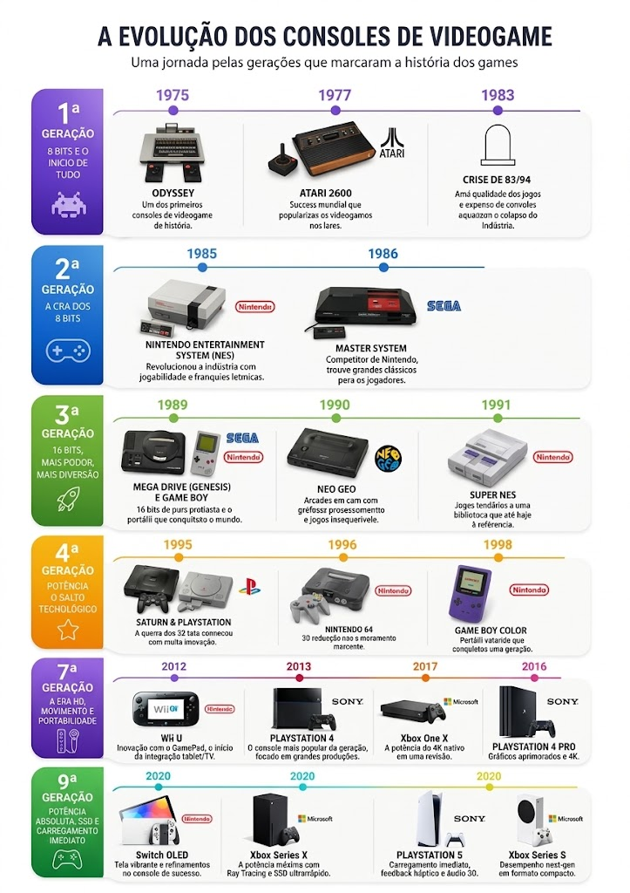

Bem-vindo à História dos Videogames
Tudo começou em 1966, quando o engenheiro Ralph Baer teve uma ideia revolucionária enquanto esperava pelo autocarro: transformar a televisão num ecrã interativo para jogos. A sua anotação num bloco de notas deu origem à Magnavox Odyssey (1972) e deu início a uma indústria bilionária. Conheça abaixo a evolução e os dados marcantes das principais consolas que revolucionaram o entretenimento:

A Evolução das Gerações e dos Criadores

Com essa ideia inicial, diversos outros inventores e empresas como a Atari, a Nintendo, a SEGA, a Sony e a Microsoft expandiram o universo dos videojogos. Ao longo das décadas, essa revolução organizou-se em 9 gerações de consolas:
1ª Geração (1972–1980): Os primórdios com o Magnavox Odyssey e o fenómeno Pong da Atari, levando os jogos de linhas e pontos para a TV.
2ª Geração (1976–1992): A popularização dos cartuchos trocáveis com o Atari 2600, Fairchild Channel F e ColecoVision.
3ª Geração / 8-Bits (1983–2003): O renascimento do mercado liderado pelo Nintendo Entertainment System (NES) e SEGA Master System.
4ª Geração / 16-Bits (1987–2004): A famosa "Guerra das Consolas" entre o Super Nintendo (SNES) e o SEGA Mega Drive.
5ª Geração / Era 3D (1993–2006): A chegada dos gráficos 3D e dos CD-ROMs com o PlayStation 1, Nintendo 64 e SEGA Saturn.
6ª Geração (1998–2013): A era do leitor de DVD e do jogo online com o PlayStation 2, SEGA Dreamcast, Nintendo GameCube e o primeiro Xbox.
7ª Geração / Era HD (2005–2017): Alta definição, comandos por movimento e redes digitais com o Xbox 360, PlayStation 3 e Nintendo Wii.
8ª Geração (2012–presente): Consolidação dos ecossistemas digitais e do formato híbrido com o PlayStation 4, Xbox One e Nintendo Switch.
9ª Geração / Era Atual (2020–presente): Altíssima velocidade de carregamento (SSDs), Ray Tracing e gráficos realistas com o PlayStation 5 e Xbox Series X/S.